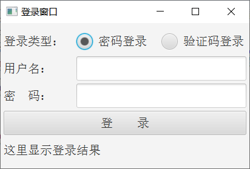
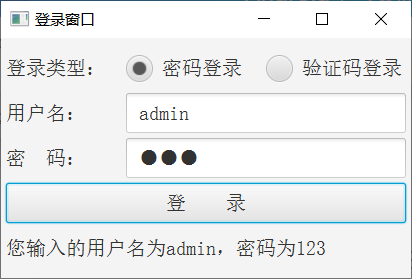

前面介绍了如何通过fxml文件编排界面布局，可是光有静态界面根本没法处理业务，必须另外书写业务逻辑的代码，方能响应各按钮的单击事件，并将业务结果即使呈现到界面上。显然，fxml内部写不了Java代码，同时入口程序已经把控件都托管给了fxml文件，也无法在Application代码中干预控件的操作。既然整个界面都托付给了fxml，那么解铃还须系铃人，只能且必须由fxml指定后续的逻辑控制器。具体做法是在fxml的根节点中添加属性“fx:controller”，通过该属性设置当前界面的控制器路径。比如之前的登录布局文件login_with_flow.fxml，它的根节点是流式窗格FlowPane，所以就给FlowPane节点补充“fx:controller”的取值，详细的标签例子见下：
<FlowPane fx:controller="com.javafx.fxml.LoginController"
xmlns:fx="http://javafx.com/fxml" alignment="center" hgap="5" vgap="5">
由以上的FlowPane标签可知，它指定的控制器路径为“com.javafx.fxml.LoginController”，这个LoginController类正是login_with_flow.fxml对应的控制器代码。作为FXML专属的搭档，控制器也要符合一定的格式规范，首先它必须实现了接口Initializable，并重写该接口定义的initialize方法，这个方法顾名思义会在界面初始化之时调用。其次，控制器内部需要声明FXML文件定义好的控件编号，这样才能通过控件编号操作每个控件对象。下面便是一个控制器范本的代码示例：
//界面控制器必须实现自接口Initializable
public class LoginController implements Initializable {
@FXML
private 控件类型 控件编号; // 其中控件类型为JavaFX的控件类名，控件编号取自fxml文件中的fx:id
@Override
public void initialize(URL location, ResourceBundle resources) { // 界面打开后的初始化操作
// 可在此给各控件设置单击事件或者选中事件，也可设置控件上的文本字体及其大小
}
}
仍以前述的登录窗口为例，它的布局文件名叫login_with_flow.fxml，同时fxml文件设定了界面对应的控制器叫做LoginController。注意到登录窗口拥有两个单选按钮和一个登录按钮，这三个按钮都应当触发单击或者选中事件，于是在控制器的代码中分别声明几个待操作的控件对象，对象名称与fxml中的fx:id保持一致。然后重写控制器的initialize方法，在该方法中各自调用三个按钮的setOnAction方法，用以注册单击或选中按钮后的触发事件。根据以上说明编写登录窗口的控制器代码示例如下：
//登录窗口的界面控制器
public class LoginController implements Initializable {
@FXML
private RadioButton rbPassword; // 密码登录对应的单选按钮
@FXML
private RadioButton rbVerifycode; // 验证码登录对应的单选按钮
@FXML
private Label labelUser; // 用户名标签
@FXML
private TextField fieldUser; // 用户名输入框
@FXML
private Label labelPassword; // 密码标签
@FXML
private PasswordField fieldPassword; // 密码输入框
@FXML
private Button btnLogin; // 登录按钮
@FXML
private Label labelLoginResult; // 登录结果标签
@Override
public void initialize(URL location, ResourceBundle resources) { // 界面打开后的初始化操作
rbPassword.setOnAction(e -> { // 选中“密码登录”单选按钮后触发的事件
labelUser.setText("用户名：");
labelPassword.setText("密 码：");
});
rbVerifycode.setOnAction(e -> { // 选中“验证码登录”单选按钮后触发的事件
labelUser.setText("手机号：");
labelPassword.setText("验证码：");
});
//
btnLogin.setOnAction(e -> { // 单击“登录”按钮后触发的事件
String result = String.format("您输入的用户名为%s，密码为%s",
fieldUser.getText(), fieldPassword.getText());
labelLoginResult.setText(result); // 在登录结果标签上显示登录信息
});
}
}
由上面代码可见，这个控制器的处理逻辑很简单，选中按钮后仅仅给文本标签设置指定文字而已，当然这样也方便观察控件的操作结果。
回到登录窗口的入口代码LoginMain，运行测试程序弹出如下图所示的登录界面。

由图示可见登录窗口默认选中“密码登录”，接着单击右边的“验证码登录”按钮，发现下方的用户名标签变成了“手机号：”，密码标签变成了“验证码：”，说明“验证码登录”按钮的选中事件被正常触发。然后分别在用户名输入框与密码输入框中填入用户名和密码，再单击下面的登录按钮，此时登录窗口的界面效果如下图所示。

果不其然，登录按钮下方的文本标签展示了输入的用户名和密码信息，可知登录按钮的单击事件也正确响应了。
更多Java技术文章参见《Java开发笔记（序）章节目录》